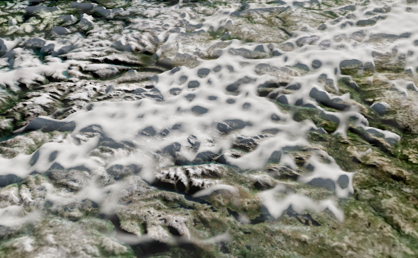

cloud_01-e65-2k

원본2048² · 태양15° · 카메라65°

768² 실제 픽셀 crop · 선명한 결/가장자리 grain도 함께 평가
JangaFX 실제 VDB → Cycles 투명2048². 현재 북유럽 장면에 적용한 화면이 아닙니다. 동일sun/sky의 원본 결을 평가하는 native offline 샘플이며, 오른쪽은 같은06원본의 낮은 관찰 각도입니다. AI 생성 이미지·기존흐린이미지 sharpen이 아닙니다.
기존 위성층은 넓은 분포/흐린 층으로 유지하고, 이 원본을 바탕으로 확대 주변 일부의 선명한 patch를 제작하는 방향. 가장자리 grain·짙은그늘·최종실사미달은 TUNE입니다.
소스 분석·다음 적용 작업·통과 기준 · 렌더 조건과 source hash
원본2048² · 태양15° · 카메라65°
768² 실제 픽셀 crop · 선명한 결/가장자리 grain도 함께 평가
원본2048² · 태양15° · 카메라65°
768² 실제 픽셀 crop · 선명한 결/가장자리 grain도 함께 평가
원본2048² · 태양15° · 카메라35°
768² 실제 픽셀 crop · 선명한 결/가장자리 grain도 함께 평가
아래는 D127의 실제scene crop입니다. 위 샘플과 구도/물리크기가 다르므로 동일구도 before/after로 판단하지 않습니다.

다음은 실제 같은 구도에서 국소 patch · projected scale · alpha/mip · 움직임 · near volume 인계를 비교합니다. 원래 서고KEEP와 그림자보류는 유지합니다.